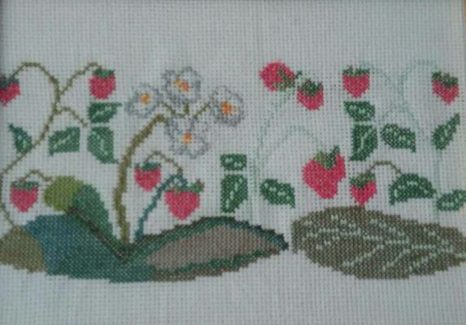

Страсть к украшению себя и своей одежды с целью выделиться чем-нибудь из окружающей среды свойственна человеческой природе, даже в первобытном, полудиком её состоянии; так, например, американские индейцы украшают одеяла различными вышивками; лапландцы на своей одежде из оленьей кожи вышивают самые разнообразные узоры. Вышивание известно было в глубокой древности, и, как многих других отраслей искусства и науки, колыбелью его был Восток. В Азии это искусство широко процветало уже гораздо ранее того, чем оно стало известно грекам и римлянам, хотя греки и приписывают изобретение вышивания Минерве, Афине-Палладе.